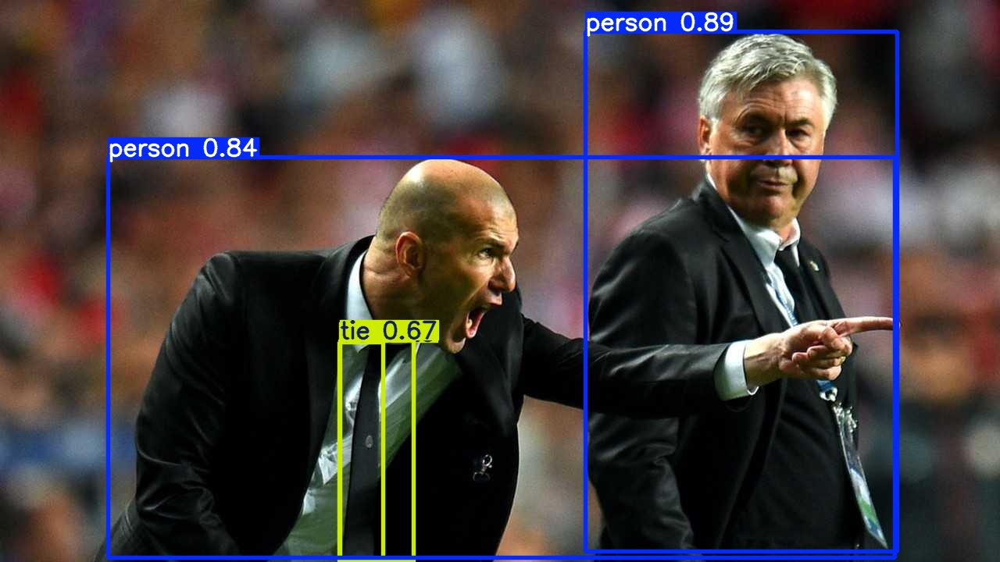

# Clone the YOLOv5 repository
git clone https://github.com/ultralytics/yolov5
# Navigate to the cloned directory
cd yolov5
# Install required packages
pip install -r requirements.txtReal-time Computer Vision AI
Getting started with YOLOv5 object detection
python
deeplearning
This post just serves as a basic notes write up of getting started with YOLO for object detection.
YOLO (You Only Look Once)1 is a real-time computer vision object detection system that uses a single neural network to predict bounding boxes and class probabilities directly from full images in one evaluation.
There are many versions of YOLO from v1 up to (at time of writing) v11. I have chosen to use YOLOv52 which is maintained by Ultralytics. The v5 model is popular as it’s highly performant, very easy to use and is built on the popular PyTorch framework.
Setup
I am using a laptop with the following specs:
Memory: 96GB
Processor: Intel Core i9-14900HX x 32
Graphics: NVIDIA GeForce RTX 4050 GPU
OS: Ubuntu 24.04.2 LTS
Dependencies
- Python >= 3.80 Get Started
- PyTorch >= 1.8 Get Started
Install
Prediction
Here we will demonstrate prediction (inference) only using a pre-trained model.
The model in this example is yolov5su.pt which is a pre-trained PyTorch model for Object Detection tasks. This was trained on the COCO (Common Objects in Context) dataset. COCO is a large-scale object detection, segmentation, and captioning dataset. It is designed to encourage research on a wide variety of object categories and is commonly used for benchmarking computer vision models.
Image Object Detection
Here is an example of object detection on a static jpg image.
from ultralytics import YOLO
# load pre-trained model
model = YOLO("yolov5/yolov5su.pt")
# download sample image or provide file path to your own
img = "https://ultralytics.com/images/zidane.jpg"
# Perform inference
results = model(img, save=True)
Video
YOLOv5 can also perform inference on video files. Here is a short clip I shot on my phone.
from ultralytics import YOLO
# Load a pre-trained YOLOv5 model
model = YOLO("yolov5/yolov5su.pt")
# Define path to video file
source = "input/street.mp4"
# Run inference on the source
results = model(source, save=True) Webcam streaming
A subtle variation is to use your webcam as a source and perform live object-detection. Under default settings this will buffer the entire stream into RAM then write it to an .avi file. This can be adjusted to purely streaming the current framer in a live viewer window, which is fun.
import cv2
from ultralytics import YOLO
# Load the YOLO model
model = YOLO("yolov5/yolov5su.pt")
# Open the video file. Not the path as '0' to indicate the webcam source
cap = cv2.VideoCapture(0)
# Loop through the video frames
while cap.isOpened():
# Read a frame from the video
success, frame = cap.read()
if success:
# Run YOLO inference on the frame
results = model(frame)
# Visualize the results on the frame
annotated_frame = results[0].plot()
# Display the annotated frame
cv2.imshow("YOLO Inference", annotated_frame)
# Break the loop if 'q' is pressed
if cv2.waitKey(1) & 0xFF == ord("q"):
break
else:
# Break the loop if the end of the video is reached
break
# Release the video capture object and close the display window
cap.release()
cv2.destroyAllWindows()Looking for a data science consultant? Feel free to get in touch here
Footnotes
Jocher, G. (2020). Ultralytics YOLOv5 (Version 7.0) [Computer software]. AGPL-3.0 License. https://github.com/ultralytics/yolov5. https://doi.org/10.5281/zenodo.3908559↩︎